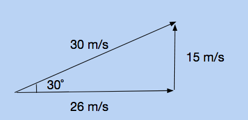
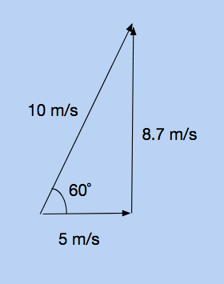
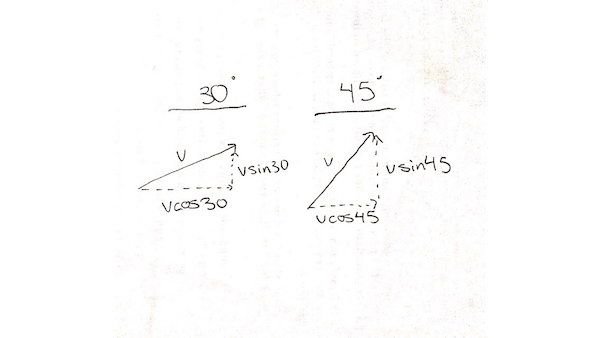
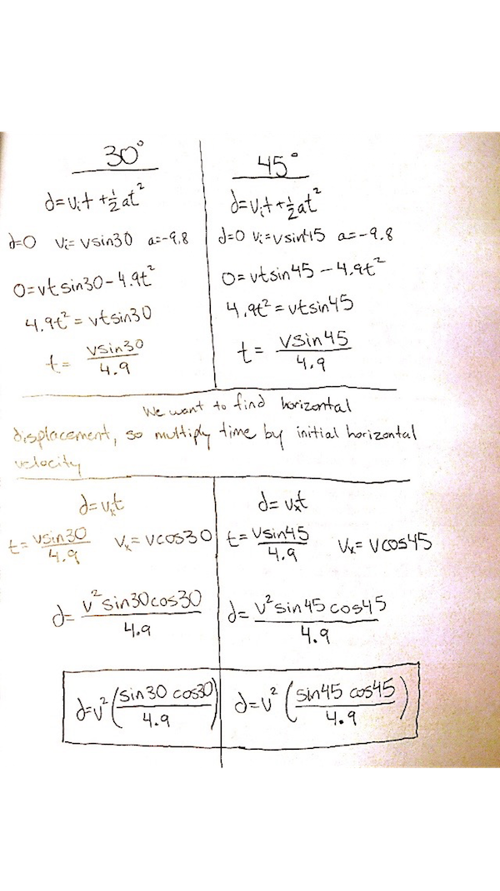

Last unit, we talked about motion in one direction. Projectile motion is the continuation of kinematics into two dimensions. A common misconception is that the 2 dimensional problems will be twice as hard. This is not the case: they will only be twice as long. You will have to use the kinematic equations twice: once for the horizontal direction, and once for the vertical direction.
Components of velocity in two dimensions
When solving projectile motion properties, you must treat the horizontal and vertical parts of motion as two seperate entities. For example, lets say you're given that a projectile has an initial velocity of 50 meters per second, launched at 60 degrees above the horizontal.The first thing you should do is break this up into speed in the x direction, and speed in the y direction. You can do this with trigonometry; to find the speed in the x direction, multiply the overall velocity by the cosine of the angle. To find the speed in the y direction, multiply the overall velocity by the sine of the angle.


We know that because of gravity, the velocity in the y direction will decrease by 9.8 meters per second, every second. However, the velocity in the x direction will remain constant! This means that if you throw a ball upwards and forwards, its speed in the horizontal direction will be the same at any point in time, even though its vertical speed will be constantly changing.
The following picture shows the horizontal and vertical velocity of a projectile change after each second.

Logic behind projectile motion problems
In projectile motion problems, there are a lot of implicits. None of these will be mentioned, but it is safe to assume that these rules will alwyas hold up. For example, the acceleration in the vertical direction will be -9.8. Also, since the speed is constant in the horizontal direction, the acceleration in the horizontal direction will be zero. You will often have to deduce more information from the prompt. For example, if a question asks how far a projectile will have traveled horizontally when at the peak of its trajectory, you can assume the final velocity in the vertical direction is zero, as that is when a projectile is at its peak. You would first solve for time, because time is the only variable that relates the horizontal and vertical components together. Once you have time, you can find horizontal displacement by multiplying time by horizontal velocity.
Example
When solving projectile motion problems, make two equations: one for the horizontal direction, and one for the vertical direction. For the horizontal equation, you will always use the principle that distance is equal to velocity times time. A general rule for solving projectile motion problems follows.
1. Break down the initial velocity into horizontal and vertical components, using the sine and cosine.
2. List the variables we have in the vertical direction. For example: acceleration (-9.8 meters per second squared), initial velocity, etc.
3. Use the equation that relates the given variables to the variable time
4. If necessary, multiply time by horizontal velocity to find horizontal displacement. This will not always be necessary, depending on the question.
A pitcher throws a ball with an initial velocity of 40 meters per second, 45 degrees up relative to the ground. If the pitcher is two meters tall, how long will it take for the ball to hit the ground.
1. We know that the angle is 45 degrees, and the net initial velocity is 40 meters per second. Therefore, we can break it up into horizontal and vertical velocity components. Using the equation above, 40 * cos(45) = 28.3 meters per second horizontally. Likewise, 40 * sin(45) = 28.3 meters per second vertically.
 2. The variabes we have in the vertical direction are initial velocity (28.3 meters per second), acceleration (-9.8 meters per second squared), and displacement. The question asks when the ball hits the ground, and since the pitcher is 2 meters tall, this will occur when the ball is displaced negative two meters.
2. The variabes we have in the vertical direction are initial velocity (28.3 meters per second), acceleration (-9.8 meters per second squared), and displacement. The question asks when the ball hits the ground, and since the pitcher is 2 meters tall, this will occur when the ball is displaced negative two meters.
3. The equation that relates initial velocity, displacement, acceleration, and time is the third equation. Plugging in the values and solving will give you that time = 5.84 seconds.
4. Though this question does not ask for it, if you wanted to find horizontal displacement (how far it traveled during its path), you would simply multiply the time by the horizontal velocity. 5.84 x 28.3 = 165.4 meters.
Quick tips & tricks
Here are some general rules for projectile motion problems that can cut down on solving time:
If the projectile will land on the same level it was shot at (not off of a cliff or onto a building), you can assume that the vertical displacement is zero.
You will almost always use the third kinematic equation when solving for time using the vertical components.
If the launch angle is 45 degrees, the horizontal and vertical velocities will equal each other. This is because sin 45 = cos 45
It is far simpler to find displacement in the horizontal direction. Since there is no acceleration in the x direction, the only equation you need to remember is that displacement equals velocity times time.
This interactive program models the flight of a projectile, given a certain initial horizontal and vertical velocity. You can toggle the "trace projectile path" square in the top left corner. You can adjust the horizontal and vertical velocities using the sliders at the bottom.
Practice Problems
1. In the program, how did the vertical velocity change with time? How did the horizontal velocity change with time?
2. In the program, roughly what mathematical shape did the projectile's flight path resemble?
3. A cannon fires its cannonball at a launch angle of 45 degrees, with an initial velocity of 40 meters per second. How far will the projectile travel?
4. An archer fires an arrow with a launch angle of 30 degrees, with an initial velocity of 30 meters per second. If the archer is 2 meters tall, how far will the projectile travel in the x direction?
5. A woman in a helicopter throws a ball will an initial velocity of 10 meters per second, at 60 degrees above the ground. How long will it take to hit the ground, if the helicopter is 30 meters above the ground?
6. (Challenge) As part of a science fair, a group of students build a cannon. The team is debating whether to set its launch angle to 30˚, or to 45˚. Which launch angle would make the projectile fly farther?
Practice Answers
1.
The vertical velocity degreased with each second. The horizontal velocity stayed constant.
3.
Horizontal Displacement: 163.4 meters
Split up the velocity into horizontal and vertical components, using the sine and cosine principles.
Use the third kinematic equation, where initial velocity is 28.3 meters per second, acceleration is -9.8 meters per second squared, and displacement is 0 meters. You should get time = 5.78 seconds. Multiply this by horizontal velocity (28.3 meters per second), and you get horizontal displacement = 163.4 meters.
4.
Horizontal Displacement: 82.9 meters
Split up the velocity into horizontal and vertical components, using the sine and cosine principles.

Use the third kinematic equation, where initial velocity is 15 meters per second, acceleration is -9.8 meters per second squared, and displacement is -2 meters. You should get time = 3.19 seconds. Multiply this by horizontal velocity (26 meters per second), and you get horizontal displacement = 82.9 meters.
5.
Time: 3.52 seconds
Split up the velocity into horizontal and vertical components, using the sine and cosine principles.

Use the third kinematic equation, where initial velocity is 8.7 meters per second, acceleration is -9.8 meters per second squared, and displacement is -30 meters. You should get time = 3.52 seconds, which is the final answer. The question does not ask you for horizontal displacement.
6.
45˚ will launch farther
Though this might seem daunting to start, we can simply start solving this the way we've always solved projectile motion problems. However, this time, we will be using variables instead of real numbers. We will start by breaking down the velocity into components.

We'll go ahead and use the third kinematic equation, and plug in these variable values for what we'd usually use.

Notice how each displacement is a variable term, multiplied by a constant term. The v squared is the variable, and all of the sines, cosines, and numbers can be simplified to one number. If we can evaluate the constants and figure out which one is bigger, that displacement will be the greater one. When you do the math for the 30˚ constants, it comes out to be .088. When you do the math for the 45˚ constants, it comes out to be .102. Thus, a 45˚ launch angle will yield a greater launch distance.
Back to Mechanics